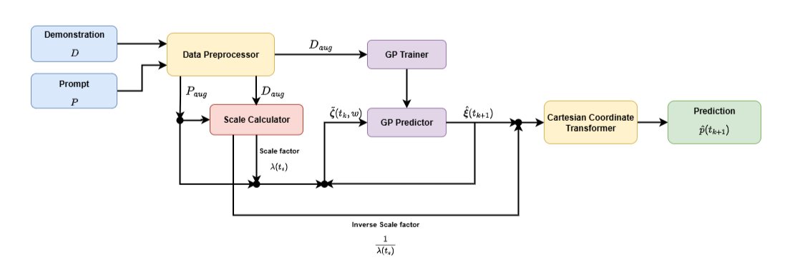

Learning from demonstration allows robots to acquire complex skills from human demonstrations, but conventional approaches often require large datasets and fail to generalize across coordinate transformations. In this paper, we propose Prompt2Auto, a geometry-invariant one-shot Gaussian process (GeoGP) learning framework that enables robots to perform human-guided automated control from a single motion prompt. A dataset-construction strategy based on coordinate transformations is introduced that enforces invariance to translation, rotation, and scaling, while supporting multi-step predictions. Moreover, GeoGP is robust to variations in the user’s motion prompt and supports multi-skill autonomy. We validate the proposed approach through numerical simulations with the designed user graphical interface and two real-world robotic experiments, which demonstrate that the proposed method is effective, generalizes across tasks, and significantly reduces the demonstration burden.
Our proposed algorithm, Prompt2Auto, follows a geometry-invariant one-shot learning pipeline. Given a human demonstration and a motion prompt, the data are first preprocessed and augmented through coordinate transformations, enforcing invariance to translation, rotation, and scaling. A scale factor is then calculated comparing the demonstration and the motion prompt, and applied to the prompt. The augmented data are used to train a GP model, which predicts the next state based on the scaled prompt. An inverse scale transformation is applied to recover the original scale of the prompt, and a Cartesian coordinate transformer maps the prediction back to the task space, resulting in a robust motion prediction that generalizes across varying task geometries.

Figure 1: Overview of the proposed Prompt2Auto framework.
"a"
"b"
"c"
"d"
"e"
"f"
"g"
"h"
"I"
"J"
"k"
"L"
"m"
"n"
"o"
"p"
"q"
"r"
"s"
"t"
"u"
"v"
"w"
"x"
"y"
"z"